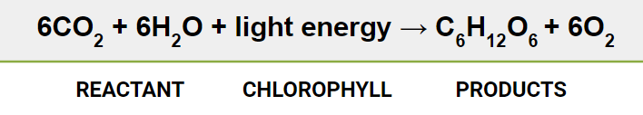

Photosynthesis

Photosynthesis is a process used by plants and other organisms to convert light energyinto chemical energy that can later be released to fuel the organisms' activities (energytransformation). This chemical energy is stored in carbohydrate molecules, such as sugars, whichare synthesized from carbon dioxide and water – hence the name photosynthesis, from the Greek φῶς, phōs, "light", and σύνεσς, synthesi s, "putting together". In most cases, oxygen is alsoreleased as a waste product. Most plants, most algae, and cyanobacteria perform photosynthesis;such organisms are called photoautotrophs . Photosynthesis is largely responsible for producingand maintaining the oxygen content of the Earth's atmosphere, and supplies all of the organiccompounds and most of the energy necessary for life on Earth.Although photosynthesis is performed differently by different species, the process alwaysbegins when energy from light is absorbed by proteins called reaction centres that contain greenchlorophyll pigments. In plants, these proteins are held inside organelles called chloroplasts,which are most abundant in leaf cells, while in bacteria they are embedded in the plasmamembrane. In these light-dependent reactions, some energy is used to strip electrons fromsuitable substances, such as water, producing oxygen gas. The hydrogen freed by the splitting ofwater is used in the creation of two further compounds that serve as short-term stores of energy,enabling its transfer to drive other reactions: these compounds are reduced nicotinamide adeninedinucleotide phosphate (NADPH) and adenosine triphosphate (ATP), the "energy currency" ofcells.In plants, algae and cyanobacteria, long-term energy storage in the form of sugars isproduced by a subsequent sequence of light-independent reactions called the Calvin cycle; somebacteria use different mechanisms, such as the reverse Krebs cycle, to achieve the same end. Inthe Calvin cycle, atmospheric carbon dioxide is incorporated into already existing organic carboncompounds, such as ribulose bisphosphate (RuBP). Using the ATP and NADPH produced by thelight-dependent reactions, the resulting compounds are then reduced and removed to form furthercarbohydrates, such as glucose.
Checimal Reaction Of Photosynthetic
Photosynthesis changes sunlight into chemical energy, splits water to liberate O2, andfixes CO2 into sugar. Photosynthetic organisms are photoautotrophs, which mean that they areable to synthesize food directly from carbon dioxide and water using energy from light.However, not all organisms that use light as a source of energy carry out photosynthesis;photoheterotrophs use organic compounds, rather than carbon dioxide, as a source of carbon. Inplants, algae, and cyanobacteria, photosynthesis releases oxygen. This is called oxygenicphotosynthesis and is by far the most common type of photosynthesis used by living organisms.Although there are some differences between oxygenic photosynthesis in plants, algae, andcyanobacteria, the overall process is quite similar in these organisms. There are also manyvarieties of anoxygenic photosynthesis, used mostly by certain types of bacteria, which consumecarbon dioxide but do not release oxygen.Carbon dioxide is converted into sugars in a process called carbon fixation;photosynthesis captures energy from sunlight to convert carbon dioxide into carbohydrate.Carbon fixation is an endothermic redox reaction. In general outline, photosynthesis is theopposite of cellular respiration; in the latter, glucose and other compounds are oxidized toproduce carbon dioxide and water, and to release chemical energy (an exothermic reaction) todrive the organism's metabolism. The two processes, reduction of carbon dioxide to carbohydrateand then later oxidation of the carbohydrate, are distinct: photosynthesis and cellular respirationtake place through a different sequence of chemical reactions and in different cellularcompartments.